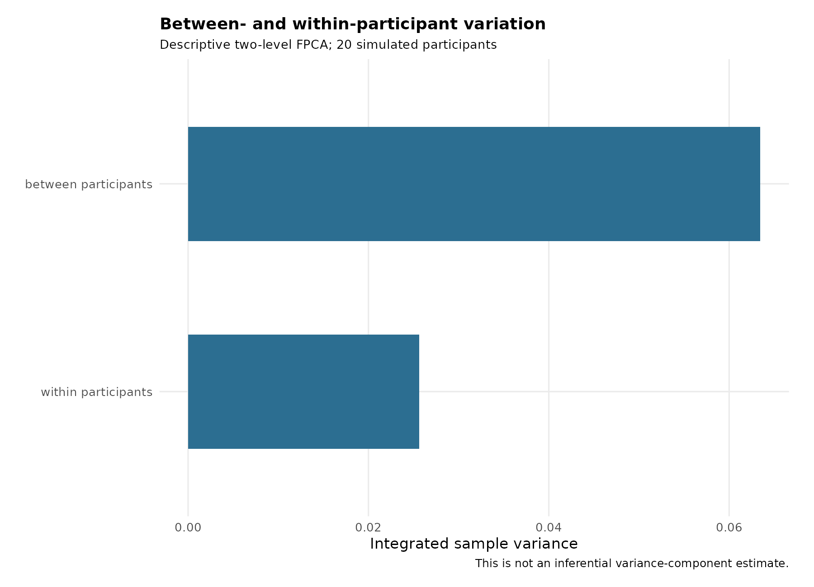
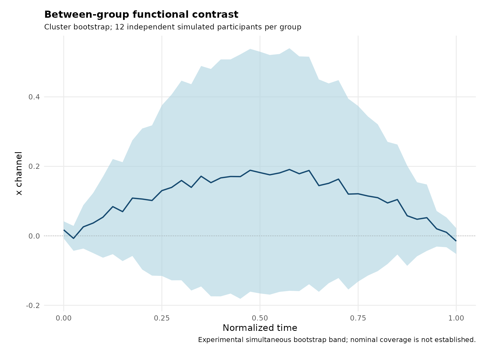
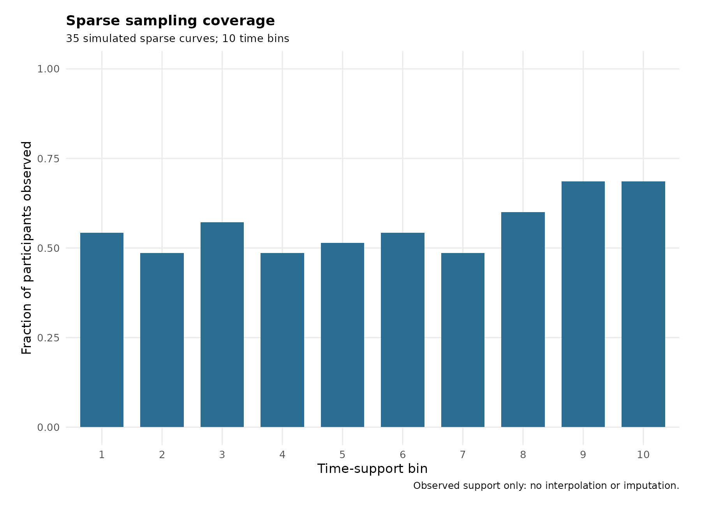
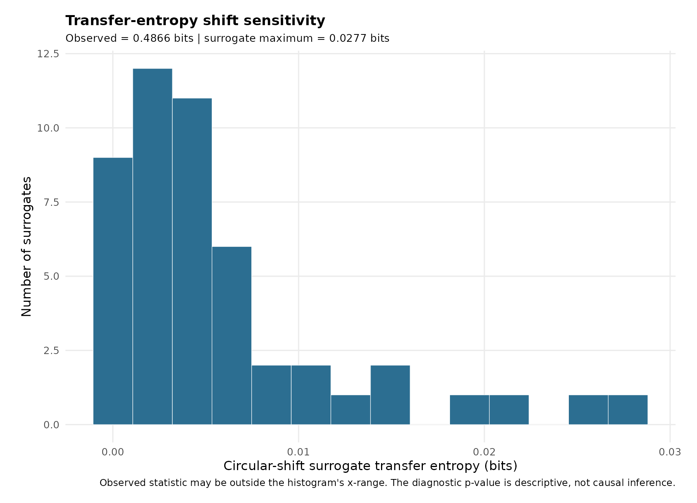

FIVE REPRODUCIBLE NATIVE R FIGURES · SYNTHETIC DATA
Explore how functional trajectories, multilevel variability, observation support and nonlinear diagnostics are represented. These are deterministic synthetic examples produced by the actual R research package and its existing figure scripts—not empirical participant recordings, proof of Python numerical parity, or evidence of calibrated statistical inference.


Between- and within-participant variation
Integrated sample variance by stratum from 20 synthetic participants. Descriptive decomposition, not inferential variance-component estimation.
Open full-resolution figure ↗
Participant-level mean band
Participant-cluster bootstrap from simulated trajectories. Experimental simultaneous bands have no general coverage guarantee.
Open full-resolution figure ↗

Time-varying group difference
Participant-resampled comparison between two simulated groups. Interpret the ribbon as experimental, not as validated inferential coverage.
Open full-resolution figure ↗

Observed sampling support
Coverage across ten bins from 35 synthetic sparse curves. Describes observed sampling only, without interpolation or imputation.
Open full-resolution figure ↗

Transfer-entropy shift sensitivity
Surrogate statistics from a coupled synthetic binary sequence. The observed value can be beyond the histogram limits; these results are not causal evidence.
Open full-resolution figure ↗Fully reproducible source
These images are generated from the existing package-owned scripts run_native_ggplot_gallery.R and run_native_worked_gallery.R, with fixed seeds and a common synthetic dataset. To generate the PNG files for the site, from the R package root:
install.packages(c("pkgload", "ggplot2"))
source("scripts/build_pkgdown_gallery.R")The source also creates CSV summaries, a PDF figure collection and a qualification manifest under the build-ignored `artifacts/native_ggplot_gallery/` folder. The pkgdown site copies only the illustrative PNG files. The gallery does not change scientific estimators or sign off any 508-export source contracts.
For methods and caveats consult Methods and Validation.